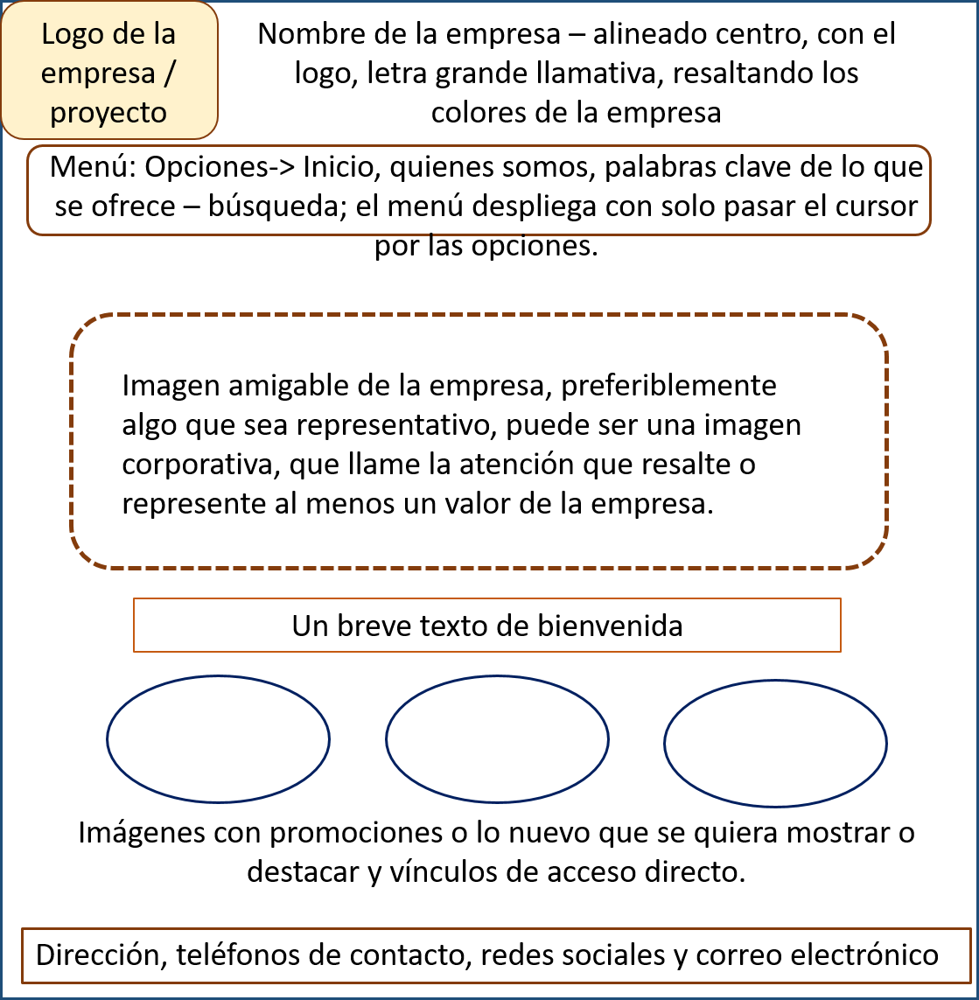

PROPIEDADES BASICAS DE CSS
OBJETIVOS
Diseñar una OVI como una estrategia que permita dinamizar
el proceso de aprendizaje interactivo, utilizandos las TIC's
para mejorar el rendimiento academico.
- Conocer el leguaje CSS
- Saber que versiones tiene el lenguaje CSS
- Reconocer las estiquetas basicas de CSS
- Aprender sobre Display: inline, block, inline-block
MATERIALES
CONTENIDO
Bienbenidos a al curso de Diseño de paginas Web, donde aprenderemos las propiedades basicas de CSS, lo cual os permitira ofrescer diseños
atractivos y originales para brindarle a nuestros clientes variedad de opciones a la hora de mostrar contenidos interactivos, esperamos atraves del curso no solo aprender, sino un intercambio de conocimiento y que todos podamos crecer y mejorar nuestras capacidades.
Comencemos...
Para los que no estan familiarizados con la programacion y programas de diseño de paginas web, tenemos el lenguaje CSS,
el cual ”, el cual sirve para organizar la presentación y aspecto de una página web. Este lenguaje es principalmente utilizado por parte de los navegadores web de internet y por los programadores web informáticos para elegir
ultitud de opciones de presentación como colores, tipos y tamaños de letra, etc. Aunque actualmente se esta utilizando
la versión 2.1 que es estándar y la 3.0 que todavía no está terminada de definir pero ya se está usando. La versión 3.0 agrega nuevas propiedades, que se suman a las anteriores
Dentro de las propiedades que nos brinda CSS, tenemos las siguientes:
- Font-family: permite definir la tipografía. Se debe poner una lista de dos o tres tipografías separadas por coma, porque si el usuario no tiene instalada la tipografía que nosostros elegimos,
el navegador opta por mostrar la siguiente que debería ser una similar, si tampoco la tiene instalada, mostrará la tipografía por defecto
- Font-size: Define el tamaño de la fuente y el valor se puede escribir en pixels o en ems. En este momento se recomienda usar ems. Los dos son valores relativos,
el pixel es un valor relativo a la resolución de la pantalla, pero el em es relativo al tamaño de la fuente definida por el usuario
- Color:Define el color de la tipografía. Los colores se pueden escribir de 3 formas distinas: con sistema hexadecimal,
por ejemplo: #FF0000 (es rojo). Con los nombres de los colores (más limitado) por ejemplo: black, red, green. O usando RGB, esta paleta permite agregar el canal alfa para hacer transparencias.
- Width:Define el ancho de un elemento, el valor se puede escribir en pixels, ems o porcentaje.
- Max-width o min-width: Definen el ancho máximo o mínimo de un elemento. Muy importante en sitios adaptables
- Height: Define el alto de un elemento, el valor se puede escribir en pixels, ems o porcentaje.
- Max-height o min-height:Definen el alto máximo o mínimo de un elemento. Muy importante en sitios adaptables
- Padding:Es la distancia desde el borde de un elemento hasta su contenido.
- Margin:Es la distancia entre un elemento y otro (desde el borde de un elemento hacia afuera)
- Border: Define el borde de un elemento, su color, su estilo y grosor.
- Background:Define los fondos de un objeto. El fondo puede ser una imagen o un color.
El color puede ser pleno o degradado. La imagen se puede repetir formando una trama (es lo que ocurre por defecto) o se puede
especificar que no repita y que se coloque en determinada posición
Display: inline, block, inline-block
- Block:hace que el comportamiento del elemento sea como un bloque.
- Inline:el elemento se renderizará en línea con otros elementos.
- Inline-block: el elemento tendrá un comportamiento mezcla entre los dos anteriores, que ahora voy a describir.
si le aplicamos la propiedad display:block; se renderizará como un bloque, es decir, sería exactamente igual que si hubiésemos puesto un "div".
MAQUETACIÒN
